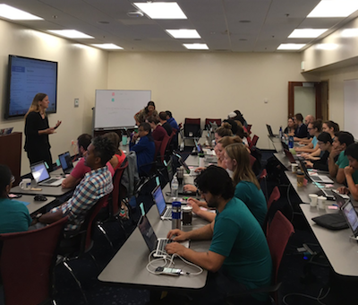

Instructor, October 2017
Nonmodel RNAseq workshop
Bioinformatics User Group,
Scripps Institute of Oceanography,
UC San Diego
Carpentry Instructor, Certified August 2017
Workshops taught:
UC Merced (October 2017) UC Davis (January 2018) *Smithsonian, Museum of Natural History (February 2018)
TA Coordinator and Instructor, 2017
Data Intensive Biology Summer Institute,
UC Davis * Next Generation Sequence Analysis Workshop (ANGUS) 26 June to July 8] * Nonmodel RNAseq workshop, 17 to 21 July
Teaching Assistant,
Next Generation Sequence Analysis Workshop,
Kellogg Biological Station, Michigan State University
Kalamazoo, MI * ANGUS 2015 * ANGUS 2016
Teaching Assistant, Winter 2017
Systemic Physiology discussion, NPB101D
UC Davis
Adjunct Faculty, 2009-2014
University of Phoenix (Online)
Environmental Science (SCI 275)
Graduate Teaching Fellow, Fall 2007
NSF GK-12 Integrated Science Teaching Enhancement Partnership Program,
Florida Institute of Technology
Melbourne, FL
Substitute Teacher, Spring 2007
Montgomery County Public Schools, Montgomery County, Maryland
Graduate Teaching Assistant, Fall 2002
Department of Biology & Marine Biology,
University of North Carolina at Wilmington
Wilmington, NC
Labs: Principles of Biology, Cells (BIO 101), Anatomy & Physiology I (BIO 240)
Teaching Assistant, Fall 2000-Spring 2002
Department of Chemistry,
Eckerd College, St. Petersburg, FL
Labs: Organic Chemistry I (CHN 121), Organic Chemistry II (CHN 122), Biochemistry I (CHN 415), Biochemistry II (CHN 417)
Copyright © 2018 Lisa K. Johnson